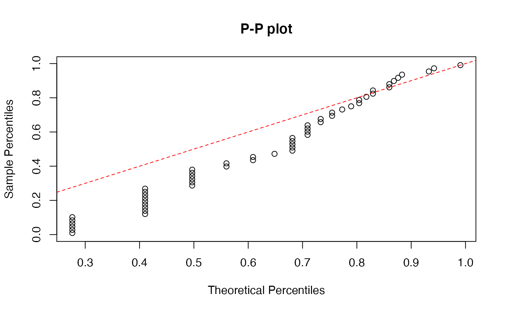
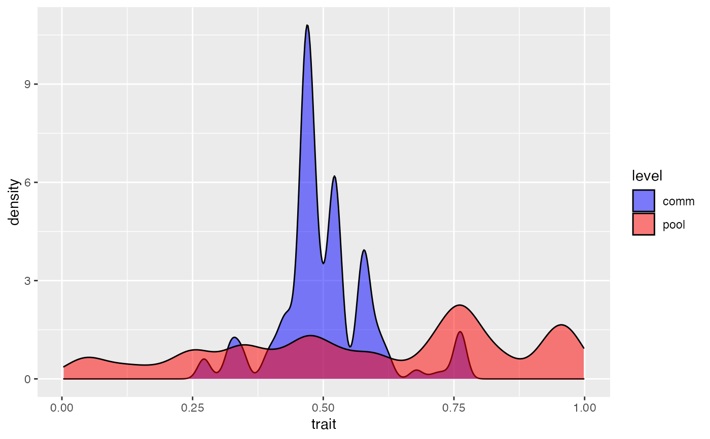

Plotting trait and species distributions of simulated communities
plot_comm.RdGraphical function to used on the output of coalesc() or
forward() functions. It can show the links between regional and
local trait/abundance distributions, or local species and rank
abundance distributions.
plot_comm(x, type = "trait", seltrait = 1, main = NULL)
Arguments
| x | a list including the species pool composition ( |
|---|---|
| type |
|
| seltrait | index of the trait to be plotted following community data.frame (if multiple traits used in simulation). |
| main | an overall title for the plot. |
Details
If type = "trait", the function provides density plots of the trait or
abundance distributions in the regional pool and in a local community.
If type = "locreg", it displays the relationship between
regional and local species relative abundances.
If type = "sad" or "rad", it shows the percentile plots provided by
functions in the "sads" package (see ppsad). The reference red line corresponds to log-series
for "sad" and to geometric series for "rad".
By default type = "trait".
To be used on the output of coalesc() or forward() functions.
Value
Return two stacked ggplot2 density plots if
type = "trait" and biplots otherwise.
Author
F. Munoz; P. Denelle
Examples
# Simulation of a neutral community including 100 individuals J <- 500; theta <- 50; m <- 0.1; comm1 <- coalesc(J, m, theta) plot_comm(comm1)plot_comm(comm1, type = "locreg")plot_comm(comm1, type = "sad")# Stabilizing habitat filtering around t = 0.5 filt_gaussian <- function(x) exp(-(x - 0.5)^2/(2*0.1^2)) comm2 <- coalesc(J, m, theta, filt = filt_gaussian) plot_comm(comm2)plot_comm(comm2, type = "locreg")plot_comm(comm1, type = "sad")